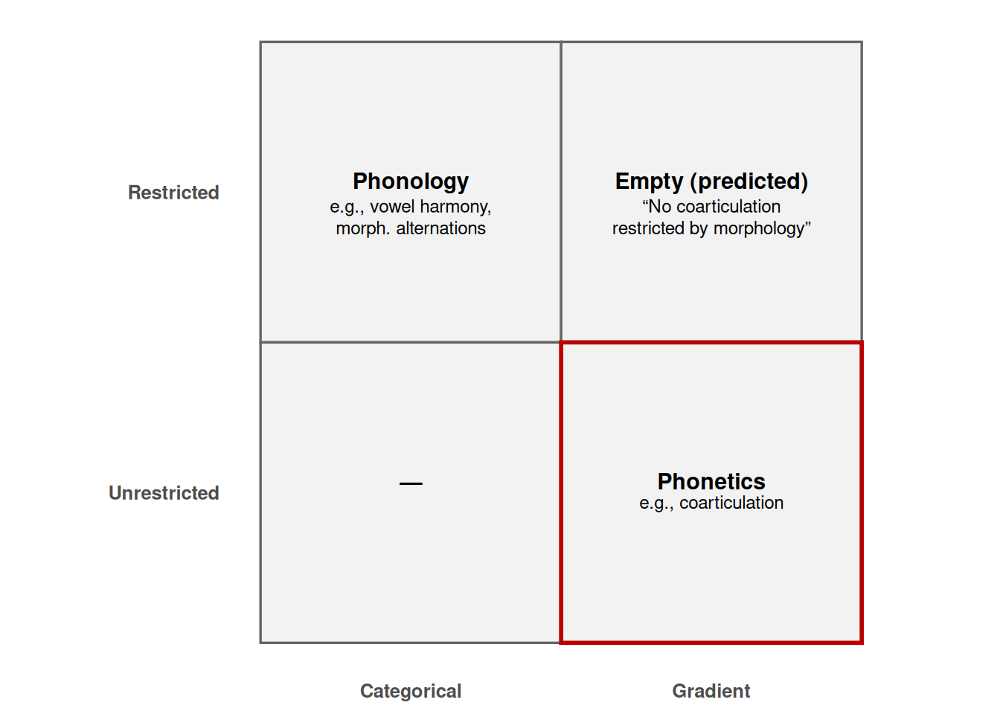

misunderstanding Kate’s talk on nonuniformity of phonology and phonetics
linguistics
misunderstanding
sound
turkish
Kate’s asymmetry meets Turkish rounding: evidence that’s gradient but syntactically bounded (also a rant about dual-process framings)
Author
Utku Turk
Published
October 29, 2025
This post is part of a series I’m calling Misunderstandings. The idea is simple: I pick up on talks, papers, or arguments that I admire but also don’t quite buy in the way they’re framed. Sometimes I pose counterexamples, sometimes I just get tangled in the details. The label isn’t meant as dismissive—usually the “misunderstanding” is mine—but I find that pushing on these points is a good way to clarify what’s at stake.
Kate Mooney’s recent talk at UMass, Segmental phonology, gestural phonetics: Explaining asymmetries between phonological and phonetic operations, was about something deceptively simple: are phonological processes uniform?
The traditional view has been “yes.” If an alternation applies freely, that’s phonology. If it’s tied to a particular morpheme, that’s phonology too, just gated by a diacritic, indexed constraint, or cyclic ranking. The assumption is that the underlying machinery is the same; what differs is timing and scope.
Kate pushed back. She focused on vowel harmony versus vowel co-articulation. Zsiga had already argued these belong to different representational domains—rules vs gestures—but Kate sharpened the contrast. Vowel harmony: categorical, typologically robust, governed by rules. Vowel coarticulation: gradient, gestural blending, and crucially never morphologically restricted. That asymmetry, she argued, is real. If you try to collapse the two into one “uniform phonology,” you erase those typological gaps.
library(ggplot2)library(dplyr)library(tibble)grid <-tibble(x =factor(c("Categorical","Categorical","Gradient","Gradient"),levels =c("Categorical","Gradient")),y =factor(c("Restricted","Unrestricted","Restricted","Unrestricted"),levels =c("Restricted","Unrestricted")),box =c("Phonology", "—", "Empty (predicted)", "Phonetics"),note =c("e.g., vowel harmony,\nmorph. alternations","","“No coarticulation\nrestricted by morphology”","e.g., coarticulation"))# numeric positions for highlighting the lower-left tile cleanlygrid_num <- grid %>%mutate(xn =as.numeric(x), yn =as.numeric(y))gg <-ggplot(grid, aes(x, y)) +# tiles and bordersgeom_tile(fill ="grey95", color ="grey40", linewidth =0.6) +# red outline around Gradient + Restricted (predicted empty)geom_rect(data =filter(grid_num, x =="Gradient", y =="Restricted"),aes(xmin = xn -0.5, xmax = xn +0.5, ymin = yn -0.5, ymax = yn +0.5),inherit.aes =FALSE, fill =NA, color ="#bb0000", linewidth =1 ) +# main labelsgeom_text(aes(label = box), fontface ="bold", vjust =-0.2, size =4) +# notes beneath each labelgeom_text(aes(label = note), vjust =1.2, lineheight =1.0, size =3.2) +# put Restricted on top row for readabilityscale_y_discrete(limits =rev(levels(grid$y))) +labs(x =NULL, y =NULL) +coord_fixed() +theme_minimal(base_size =12) +theme(panel.grid =element_blank(),axis.text =element_text(face ="bold") )gg

Figure 1: A schematic 2×2 for Kate’s asymmetry. The gradient+restricted quadrant is predicted empty.
It’s a nice move because it comes with clear predictions. You shouldn’t get consonant copy or epenthesis as general phonotactic repairs, only as morphologically restricted alternations. You shouldn’t get morphologically restricted coarticulation. The grid is crisp: categorical + restricted = phonology, gradient + free = phonetics.
I should also say I’m not hostile to this move. In fact, I like the idea that phonology and phonetics are not a uniform system. Substance-free phonology has long made a similar claim: phonology is its own representational domain, not reducible to phonetic substance. I’ve always found that perspective appealing, and Kate’s framework fits that general spirit even though she keeps an arm’s-length stance toward committing to any particular theory.
But I’m suspicious of two-level partitions in general. I feel like in cognitive sciences, whenever there is a hard to explain data, first instinct of many people is to propose a two-level model. Automatic vs controlled processing, System 1 vs System 2 reasoning, parsing vs grammar. Sometimes, this two-level model is needed, especially when it is used to isolate a problem. For example, in the case of I-language idea, it was a powerful tool to carve a theoretical space just to discuss grammar. However, as theorization accumulated, this distinction sometimes used as a pile of “I-actually-dont-have-any-idea-so-it-might-be-processing”.
This pattern is everywhere in cognitive science, and all of these frameworks—including what Kate’s suggesting—share the same basic architecture: one process is fast, automatic, and associative; the other is slow, deliberate, and rule-based. The hope is that human behavior can be explained by sorting phenomena into the right bin. And of course, if you set out to show that sometimes people behave automatically and make mistakes; sometimes they behave deliberately and do not make mistakes, you’ll find confirmation all over the place.
But as Gawronski, Sherman & Trope (2014) point out, dual-process theories only make progress if they meet a demanding set of conditions: they must specify what the two systems actually are (their operating principles), not just when they operate; they must define the boundaries of each system clearly; and they must generate empirical predictions that could, in principle, be falsified. Otherwise, they collapse into post-hoc labeling—System 1 when it’s effortless, System 2 when it’s not. While dual-process frameworks can be falsifiable in principle, they are often practically unfalsifiable because the internal ‘systems’ aren’t anchored to observable input–output relations. Almost any finding can be retrofitted: if an effect looks automatic, it’s assigned to System 1; if it’s resource-dependent, to System 2.
That’s my main worry here. Dual-process models are a tempting last resort. They look tidy, but they often function as theories that can’t really lose—precisely the kind that Popper warned us about. John von Neumann put it bluntly: “With four parameters I can fit an elephant, and with five I can make him wiggle his trunk.” And if you add one more, you can even make him wink. There’s even an R implementation—the winking pink elephant—that literally draws and animates an elephant with just a handful of parameters. It’s cute, but it’s also the point: if your model is that flexible, fitting isn’t the same thing as explaining. (The original code is base R/MASS heavy, but you can rewrite it cleanly with ggplot2 and dplyr.)
Figure 2: “With four parameters I can fit an elephant.” The outline is generated by a short Fourier series using complex coefficients.
That’s where Turkish comes in.
The Turkish case
As it is almost a common knowledge, Turkish exhibit multiple vowel harmonies. Harmonization spread from left to right. The easier one is the backness/frontness harmony. For example, the plural morpheme in Turkish can surface as either -lar or -ler, depending on the last vowel in the word that they are attaching. It is argued that plural morpheme is underspecified in its backness characteristics. And, whatever the value of the previous vowel, it spread into the plural morpheme.
[yzym] + /-lAr/ -> [yzymler]
[adam] + /-lAr/ -> [adamlar]
Another present harmony is Backness and Roundness Harmony. For example, the accusative case can surface as -ɨ, -i, -u, -y in Turkish. Again, the way that it is going to surface is completely dependent on the previous vowel. In this case, the accusative case is underspecified for its roundness and backness, but not underspecified for its height, -I.
[adam] + /-I/ -> [adamɨ]
[herif] + /-I/ -> [herifi]
[odun] + /-I/ -> [odunu]
[yzym] + /-I/ -> [yzymy]
Turkish does not have any other widely accepted vowel harmony apart from these two. This means that Turkish normally doesn’t have free-standing rounding harmony. Moreover, Turkish vowel harmony is strictly word-internal and left-to-right. Backwards harmony is virtually absent. Between-word harmony is nonexistent.
However, there is an interesting case in which all of these properties are overhauled. Turkish exhibit optional vowel characteristic change in a very specific environment. In fast production of complex noun phrases (an NP and a modifier), speakers often round the initial vowel of the second NP (NP2) if:
The last vowel of NP1 is [+round].
The first vowel of NP2 is [+high, –round].
The second vowel of NP2 is [+round].
NP1 ends in a single consonant (clusters tend to block it).
Examples (NP1 modifiers in italics):
bir ikon (one icon) → [bir ikon] but on ikon (ten icons) → [on ykon]
iki milyon (two millions) → [iki miljon] but dokuz milyon (nine millions) → [dokuz mylyon]
güzel vizyon (beautiful vision) → [gyzel vizyon] but hoş vizyon (nice vision) → [hoʃ vyzyon]
bazı sigorta (some insurance) → [bazɨ sigorta] but tüm sigorta (whole insurance) → [tym sygorta]
tek biyoloji (single biology) → [tek bijoloʒi] but vücut biyoloji (body biology) → [vyʒut byjoloʒi]
Not everything goes through:
üç nilüfer (three lilies) → [ytʃ nilüfer] (no rounding)
tüm limon (whole lemon) → [tym limon] (no rounding)
küçük işgücü (small workforce) → [küçük işgücü] (blocked by CC cluster)
Loanwords are especially revealing. Epenthetic vowels often participate: hipodrom, sigorta, diskotek. Compounds resist, especially when the boundary is vowel–vowel. Some high-frequency words seem entrenched with disharmony, like dinazor (originally dinozor). There are also asymmetries with labials: sometimes a labial consonant plus a preceding rounded vowel creates the right environment, but not always (nilüfer resists).
Why it bugs me
At first glance, this seems like a good evidence for Kate’s argument.
It’s optional: It does not necessarily go through, actually you will hear people do not make the rounding bunch of the times.
It’s gradient: I do not feel like the vowel quality of the rounded one is similar to other round vowels.
It seems to apply semi-automatically in fast speech.
However, Kate’s argument relies on the non-collapsibility of the quadrant. An event that looks like this should be co-articulation, and should happen irregardless of morphological or syntactic environment. However, that is not the case for this phenomenon. This specific bidirectional vowel harmony, or stuck vowel, only occurs within the syntactically complex DPs. It does not occur within the same word when the same configuration exist. On the contrary, within the same root, there is an additional push for creating disharmony [see Clements and Sezer].
In phrases that is not dominated by the same syntactic node, this rounding harmony does not occur. For example, in a sentence like (1), one would expect “ikon” to be pronounced as [ykon] due to the presence of the adverb dün [dyn] prior to it, however, that is not the case. The same resistance is preserved even if we do not have this string in a place close to the topic area, the left-most phrases in Turkish sentences. The same resistance is still preserved if we place these two elements post-verbally, where they are produced in the same breadth, without a possible prosodic break.
Dün ikon aldım `I bought an icon yesterday’
Ben Ahmetlerin dükkanından dün ikon aldım. `I bought an icon yesterday from Ahmets’ store’
Ben Ahmetlerin dükkanından aldım dün ikon. `I bought an icon yesterday from Ahmets’ store’
This is exactly the quadrant that Kate’s asymmetry says should be empty: co-articulation is supposed to be gradient and unrestricted, phonology is supposed to be categorical and morphological. Turkish gives you a phenomenon that’s both gradient but restricted.
My worry is that the two-level carve—categorical vs gradient, phonology vs phonetics—is just too strong. If phonology is supposed to be categorical and morphologically restricted, and phonetics gradient and unrestricted, what do we do with Turkish? Calling it “just coarticulation” ignores the morphological conditioning. Calling it “phonology” ignores the gradient, variable character.
Maybe I’m misunderstanding Kate’s point—her claim is typological, and she might be perfectly happy calling Turkish an outlier. But it makes me uneasy. Two-level models are good at drawing clean lines, and that’s why they’re attractive. But reality doesn’t always honor the bins we set up for it. One possibility is that coarticulation might be systematically governed prosodical structure. As of now, I categorize this in terms of nouns and their modifiers. It is possible that this is generalized to other heads and their modifiers. Then the question would be the following: is this rounding-harmony conditioned by prosodical structure that is a by-product of “head-modifier” relation or is it conditioned by syntactic locality?